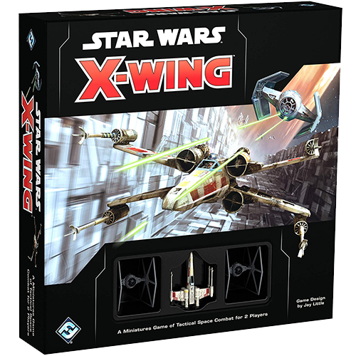

The below list is not listed in any ranking. I had a hard time trying to officially rank then but ultimately decided to list them in no particular order. If you are interested in learning more about the game or would like to purchase the game, I will include a link below each entry. However, its best to support your Friendly Local Game Store (FLGS), so find one in your area and support local business.
Dominion

I am a sucker for deck-building or engine card games, so it should come as no surprise that Dominion found its way on my top 5 list. Not only is it a basic deck-building game, it has a plethora of expansions making each game and strategy to win unique.
So what is a deck-building game? It's typcially a card game, though sometimes a game board is invovled, where the main focus of the game is to build your deck of cards using game resources to acquire enough victory points to win the game.
Star Wars: X-Wing
Star Wars: X-Wing is my most favorite table top tactics game. It might help that I am a HUGE Star Wars junky, but aside from that I really enjoy how the game is played. It's a little bit like 5D Chess.
A table top tactics game is similiar to a board game but typically has all its pieces purchasable individually and the strategy of the game is similiar to commanding an army and you're the general.
Camel Up

If you are looking for a game to convince you to never gamble again or to see who's buying dinner next, I can't suggest Camel Up enough. Think of a day at the horse races, but the speed of the horse are determined by the fall of the dice.
Camel up is a pretty standard board game. All game pieces and boards are included in the box. Due to the nature of this game, even if you think you know who's going to win....you better think again.